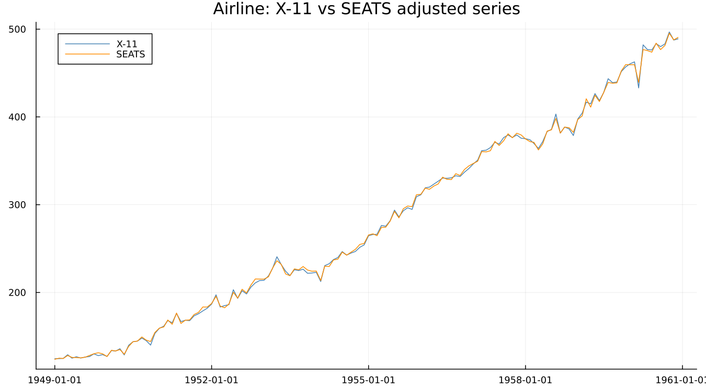
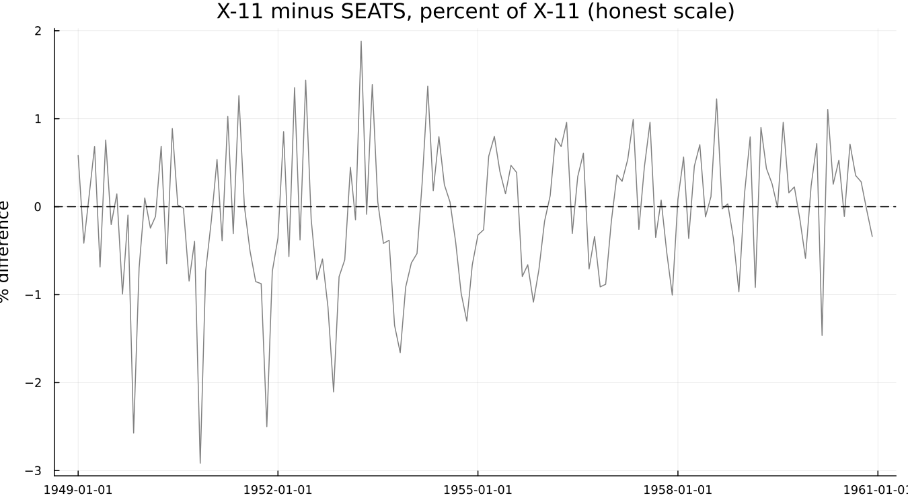
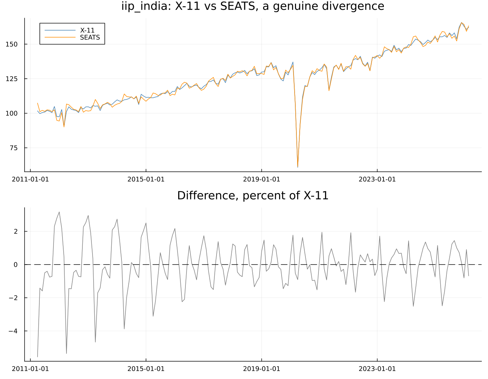

15. X-11 and SEATS Compared
The realisation that gives this chapter a spine
The obvious way to compare two adjustments is the diagnostic scorecard from Part V. That does not work here. M1–M11 and Q are X-11 constructs, and mstats returns nothing for a SEATS run — confirmed directly, not assumed. filters does too, in its own way: trend_ma comes back nothing and seasonal_ma an empty list, because SEATS has no filter family for those fields to describe at all.
That looks like an obstacle, and it is in fact the chapter's most interesting point: there is no common quality score between the two methods. The field's single most-quoted summary statistic cannot arbitrate between the field's two rival methods.
What does apply to both, checked directly against a real SEATS run rather than assumed from the X-11 case:
| Diagnostic | Works for SEATS | Confirmed |
|---|---|---|
qs | yes | real statistics returned for original/sa/irregular/residual |
spectral_peaks | yes | real peak flags returned |
residual_diagnostics | yes | regARIMA is shared by both engines |
mstats | no | X-11 construct; returns nothing |
filters | no, mostly | trend_ma=nothing, seasonal_ma=[]; SEATS has no filter family |
seasonality_tests | no | a real correction to this chapter's own original plan — it needs the f2.fsb1 key from X-11's own D8 stable-seasonality F-test, which a SEATS-only run never produces |
The comparison is made on residual seasonality and spectral evidence, not on Q or the F-tests — a genuine methodological constraint, not an oversight of this package.
15.1 Same series, both engines
airline through both:

The difference, at an honest scale — not stretched to appear more dramatic than it is:

A small, oscillating difference throughout, averaging 0.6% and peaking under 3% — the two methods agree closely on this series. Had they agreed even more closely still, the figure would show that plainly; the point of drawing it honestly-scaled is that the reader sees what actually happened either way.
It should be noted that the components arrive under different table names — X-11's D10–D13 against SEATS' S10–S18 — though both are reachable through series in the same way.
15.2 Judging them without a common score
Run qs, spectral_peaks and residual_diagnostics on both outputs and compare — this is genuinely possible, unlike the M-statistic route. The honest observation from the table above stands: there is no single number that adjudicates between the two engines the way Q was hoped to.
This connects directly back to Part V. Chapter 16 argued that the diagnostic battery exists because the decomposition itself is not identified. Here is that argument in its sharpest form yet: two methods, two different conventions for resolving the same fundamental ambiguity, and no test that says which convention was right.
15.3 Where they diverge
A genuinely divergent case did not need to be designed — it turned up simply by running every bundled dataset through both engines and comparing. iip_india shows it clearly:

The disagreement is largest — over 5% — in the first two years of the series, and settles into a smaller, persistent oscillation afterward. That pattern is worth noticing rather than glossing over: it is largest at an edge of the series, the same structural problem Chapter 9 built an entire chapter around, here showing up as a disagreement between methods rather than a within-method revision. Both engines handle the interior of a long series confidently; both are less certain near an edge, and here they resolve that uncertainty differently from each other. Interestingly, the two engines track each other closely straight through the series' own dramatic COVID-era shock in 2020 — the outlier itself is large enough that both regARIMA-based front ends absorb it in much the same way, and the disagreement is concentrated elsewhere.
15.4 Which one should be used
- Most of the time, on most series, the two agree closely enough that the choice does not materially matter —
airlineabove is the ordinary case, not the exception. - SEATS is the natural choice where the ARIMA model is a genuinely good description of the series and a coherent statistical framework matters for its own sake.
- X-11 is more robust when the fitted model is a poor description of the series, and it always produces an answer — SEATS, per Chapter 14's own §14.4, sometimes cannot.
- In practice, institutional convention decides most of the time, and there is nothing wrong with that: Chapter 3 already noted that Europe largely adopted SEATS while the U.S. kept X-11, a split driven as much by history and tooling as by a series-by-series statistical argument.
European statistical offices largely adopted TRAMO/SEATS; the United States and several other countries kept the X-11 tradition. JDemetra+ (widely used across European statistical offices) and X-13ARIMA-SEATS both implement the same underlying methods this book covers, reflecting that split in convention and tooling as much as in the underlying statistics.
See also: Chapter 9 for the edge-of-series argument this chapter's own divergent case echoes from a different angle. Chapter 16 for the non-identification argument this chapter's central finding is the sharpest illustration of yet.